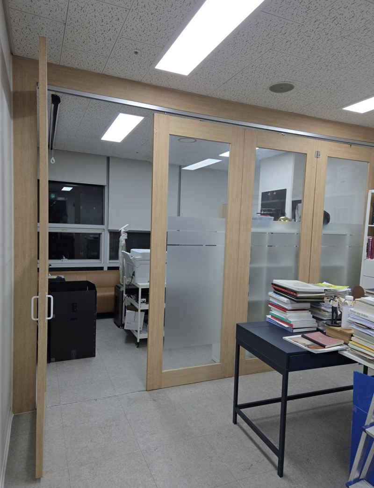
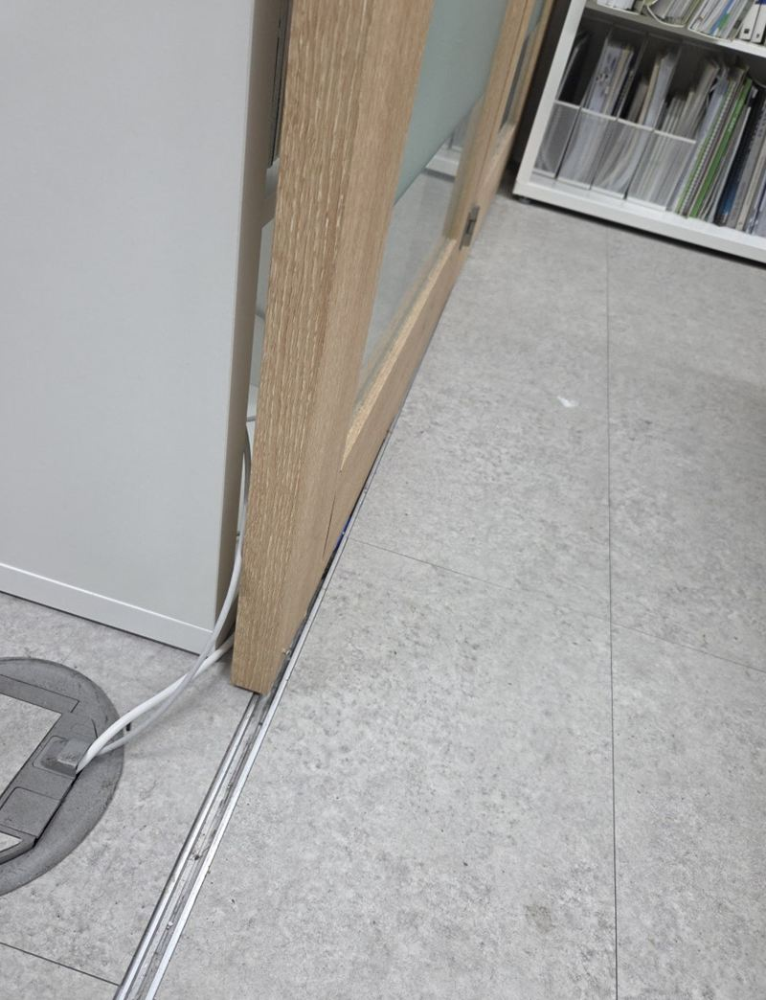
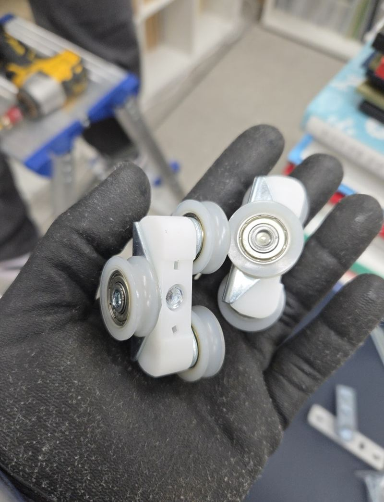
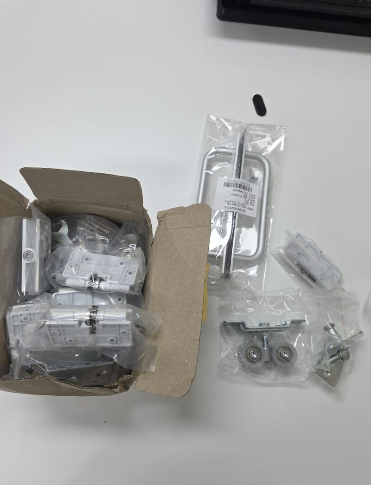
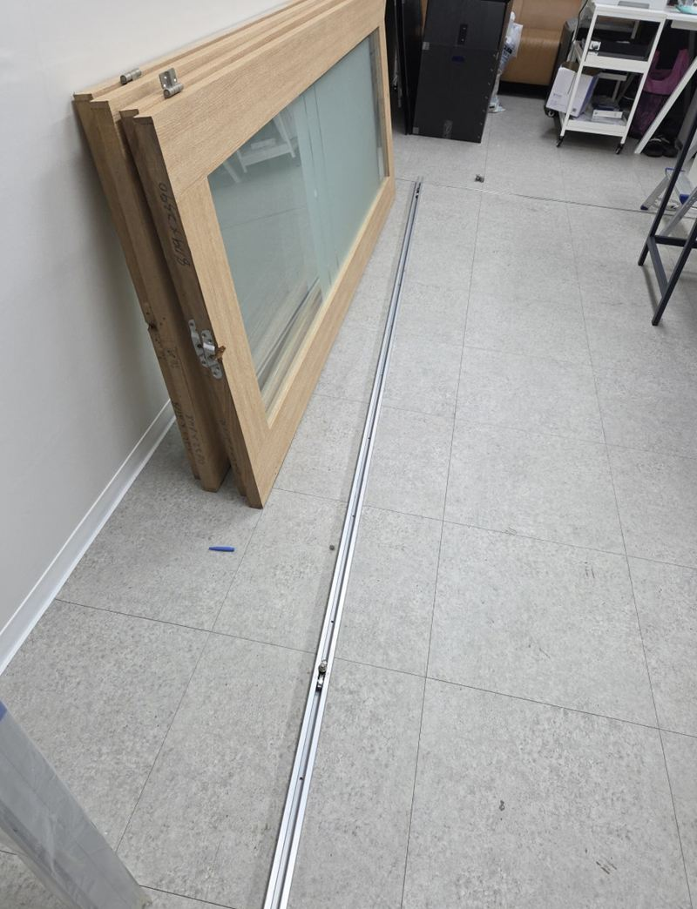
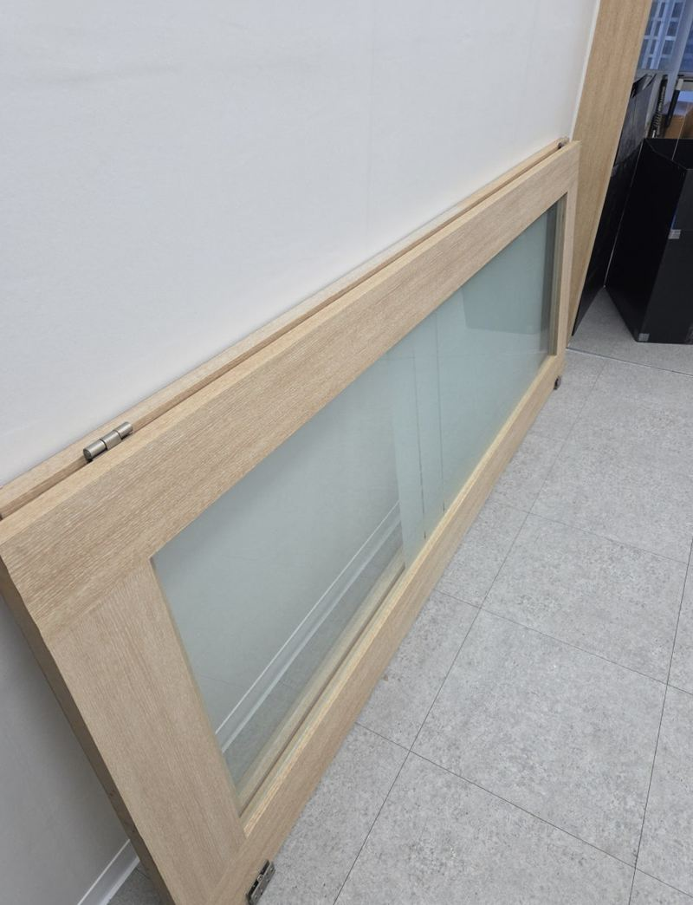
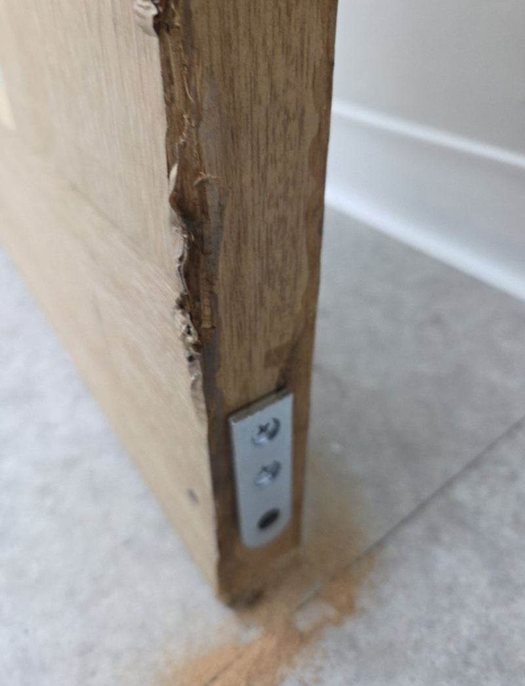
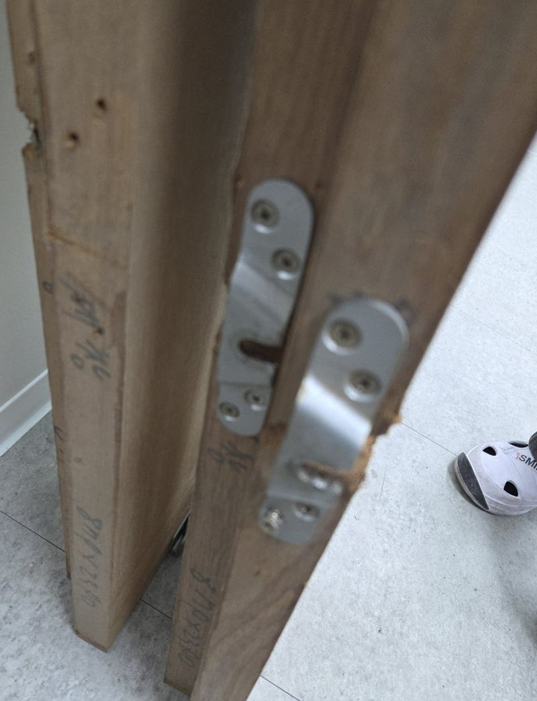
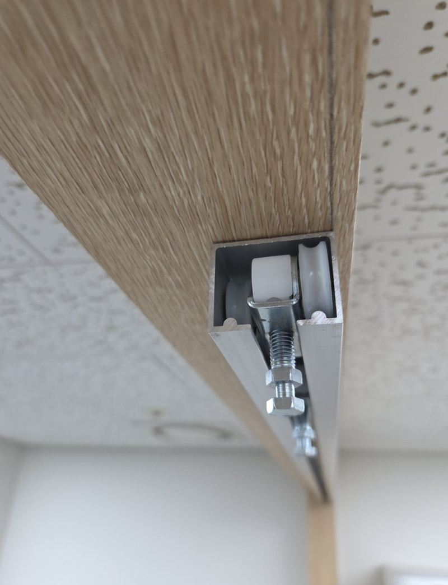

영등포 폴딩도어 한쪽 문만 롤러 교체 방법

 수리 전수리 후
수리 전수리 후← 밀어서 전후 비교 →
"몇 달째 반쪽만 열고 쓰고 있어요." 영등포 양평동 지식산업센터의 한 사무실 폴딩도어는 문짝 두 장이 레일에서 꼼짝도 하지 않았고, 한 장은 아예 떼어서 벽에 세워 둔 상태였어요. 새로 바꾸지 않고 롤러와 레일만 손봐서 전체를 다시 접히게 만들었어요.
멈춘 문, 열어 보니 원인은 세 군데
문짝을 하나씩 흔들어 보며 확인하니 문제는 한 곳이 아니었어요. 아래 롤러는 닳아서 바퀴가 돌지 않았고, 위쪽 롤러 중 일부는 베어링이 빠진 채 억지로 끼워져 있었어요. 여기에 고객님이 여는 방향을 반대로 바꾸고 싶어 하셔서, 기존 상부 레일은 그대로 쓰기 어려웠어요.


한쪽 문만 고장 난 것처럼 보여도, 실제로는 옆 문짝 무게가 쏠리거나 레일이 처져서 생기는 경우가 많아요. 그래서 고장 난 짝만 보지 않고 전체 정렬부터 확인해요.
롤러 교체와 레일 수리, 이렇게 진행했어요
-
맞는 부속 준비
폴딩도어는 제조사와 설치 시기마다 롤러 규격이 달라요. 현장에서 본 부속과 같은 크기의 롤러와 레일 부속을 미리 맞춰 왔어요.

-
문짝 탈착과 기존 레일 철거
문짝을 한 장씩 내려놓고 위쪽 레일 고정을 풀었어요. 레일을 떼어 낸 김에 천장과 벽 고정면 상태도 함께 봤어요.


-
새 레일 고정과 문짝 재설치
새 상부 레일을 현장 길이에 맞춰 자르고 수평을 잡아 고정했어요. 이어서 문짝을 하나씩 걸며 롤러가 레일 안에서 매끄럽게 도는지 확인했어요.


-
접고 펼치기를 여러 번
문을 끝까지 접었다 펴기를 반복하며 한쪽에 힘이 쏠리지 않는지, 바닥에 끌리는 곳이 없는지 조정했어요.

여는 방향을 바꾸고 싶을 때
폴딩도어는 문짝이 접히는 쪽과 고정되는 쪽이 정해져 있어서, 방향을 바꾸려면 경첩 배치와 롤러 위치를 함께 바꿔야 해요. 레일 끝단 구조에 따라 레일 교체가 필요할 수도 있어요. 이 현장은 레일을 새로 다는 김에 방향 변경까지 한 번에 반영했어요.
| 상황 | 보통 하는 작업 |
|---|---|
| 한 짝만 뻑뻑해요 | 그 짝 롤러·베어링 교체 |
| 여러 짝이 같이 걸려요 | 레일 처짐 확인, 정렬 다시 잡기 |
| 열리는 방향을 바꾸고 싶어요 | 경첩·롤러 재배치, 필요하면 레일 교체 |
이런 폴딩도어라면 수리부터 알아보세요
- 반만 열고 쓰는 중이에요한두 짝이 멈춰 반쪽만 쓰고 있다면 롤러와 레일만 손봐도 전체를 다시 쓸 수 있는 경우가 많아요.
- 밀 때 덜컹거리고 쇳소리가 나요롤러 바퀴가 닳았거나 베어링이 빠진 신호예요. 그대로 쓰면 레일까지 상해요.
- 문짝 하나를 떼어서 세워 뒀어요떼어 둔 짝도 규격 부속만 맞추면 다시 걸 수 있어요. 떼어 둔 짝 사진도 함께 보내 주세요.
- 사무실 칸막이용 폴딩도어예요지식산업센터·오피스 폴딩도어도 같은 방식으로 수리해요. 업무 시간 외 작업도 상의해요.
폴딩도어 수리 전에 물어보시는 것
오래 방치한 폴딩도어도 고쳐서 쓸 수 있나요?
문짝과 유리가 멀쩡하면 롤러·레일 교체로 되살릴 수 있는 경우가 많아요. 이 현장도 몇 달 멈춰 있던 문이었어요.
롤러만 사서 직접 갈아도 될까요?
규격이 맞는 롤러를 찾기 어렵고, 문짝을 들어 내려야 해서 혼자 하기엔 무거워요. 정렬이 틀어지면 다른 짝까지 고장 날 수 있어요.
사무실이라 작업 중에 업무가 멈추나요?
문짝을 내리는 동안 그 구간 출입만 불편해요. 업무 시간을 피해 일정을 맞출 수 있어요.
교체 대신 수리했을 때 얼마나 쓸 수 있나요?
사용 빈도와 문 무게에 따라 달라요. 정렬을 제대로 잡아 두면 롤러 한쪽에 무리가 덜 가요.
같은 폴딩도어, 다른 현장
멈춘 폴딩도어 전체와 위·아래 롤러 쪽을 찍어서 보내 주세요.
전화 상담 010-4517-9872